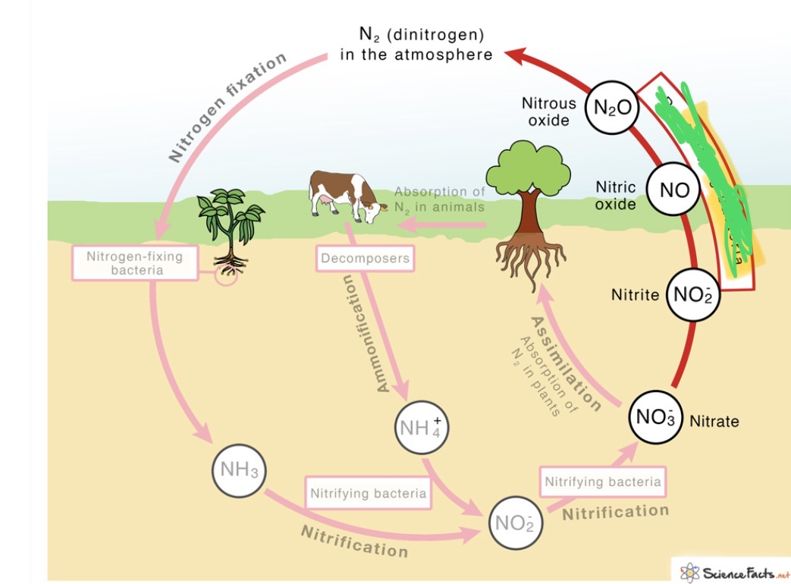

Nitrogen fixation: Soil dwelling ___ (and lighting) are able to transform atmospheric nitrogen into a form tht other living cells can use. it is done by ___
since the button broke it is bacteria

what is opposite of nitrogen fixtation that converts nitrates into gas, nitrogen gas is released into atmosphere and some bacteria can do opposite of nitrogen fixtation?
Click here for answer
What makes the product of bacteria during decay of nitrogen organic matter, soil bacteria convert waste products into ammonia
Click me for answer
What process makes nitrates from ammonia, some of the ammonia in the soil is converted by several kinds of bacteria to nitrates and these nitrates are absorbed from the soil to plant
Click here for answer
What process does one of these things Ammonia and Nitrates are picked up by plants
Click here for answer
What thing that are bones is apart of the cycle?
Click here for answer
What waste is liquid that animals produce that is apart of nitrogen cycle
Click here for answer